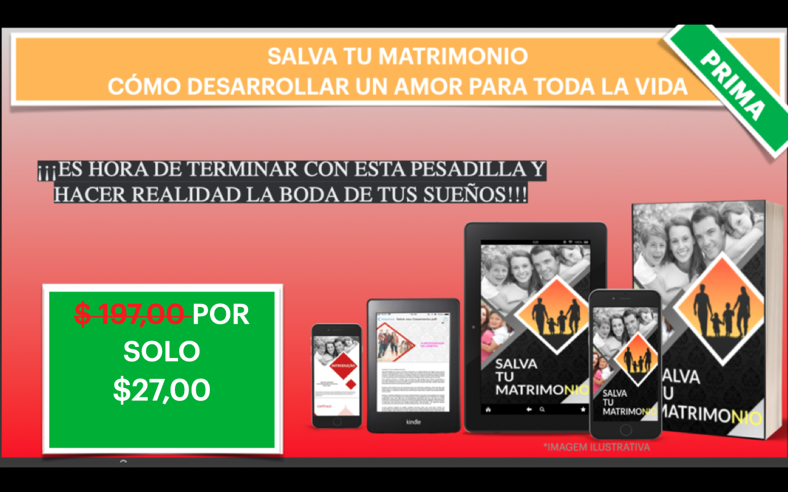
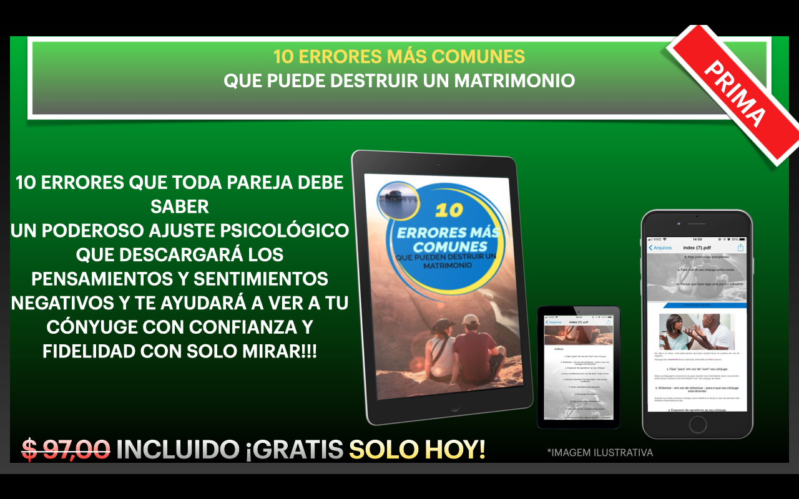
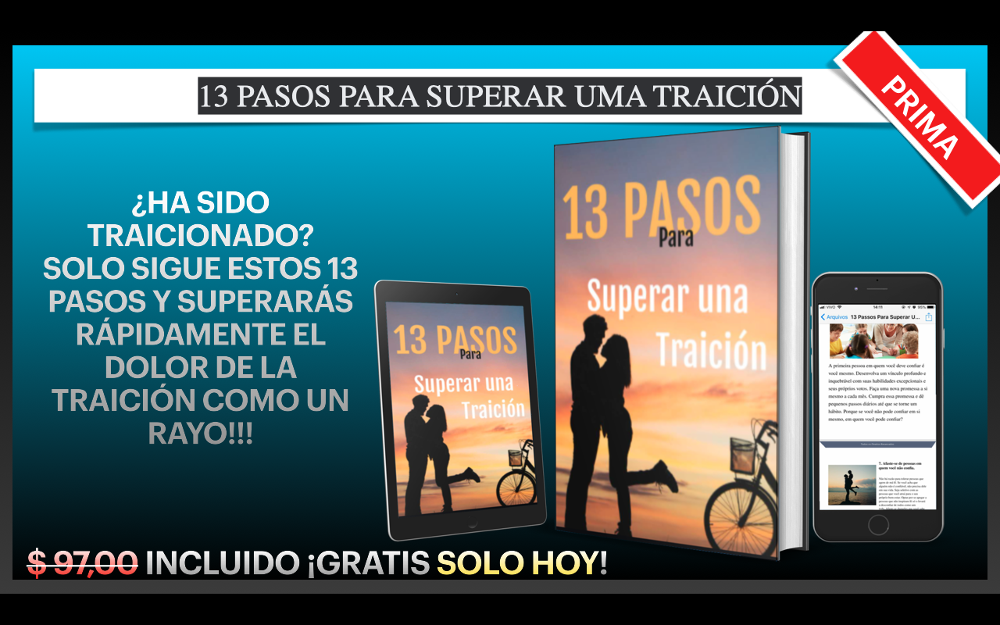

¿Por qué su cónyuge le miente sobre las razones por las que quiere el divorcio…
Aquí le mostramos cómo descubrir la verdad, eliminar las mentiras y el dolor, detener el divorcio en curso y reconstruir el matrimonio fuerte e íntimo con el que siempre ha soñado... ¡incluso si su cónyuge no quiere!
Querido lector, No voy a mentir sobre tu matrimonio y decir que todo estará bien. Tu matrimonio, todo lo que amas y valoras, todo lo que has construido hasta ahora para tu familia, está todo en el fondo.
No puedes comer... no puedes dormir... no puedes dejar de pensar en ello... Tu salud está en caída libre debido al enorme estrés al que te encuentras. Toda tu vida y felicidad futura, algo que una vez se sintió tan bien, tan verdadero, ahora está precariamente llegando a su fin, esperando cuál será el problema en tu relación nuevamente.
¿Tu matrimonio está a punto de tirarse por un precipicio... y te llevará contigo? Tengo TRES cosas para compartir con usted que desactivarán inmediatamente la amenaza del divorcio y trabajarán para reconstruir y salvar su matrimonio AHORA si las hace, ¡pero tiene que escuchar atentamente y hacerlas sin dudarlo si quiere salvar su matrimonio!
1-DETENGA lo que está haciendo ahora. Los métodos equivocados y las ideas bien intencionadas que ha utilizado hasta ahora no han funcionado. Por eso estás aquí y tu matrimonio está cada vez más cerca del divorcio. Lo que has hecho hasta ahora podría alejar aún más de ti al amor de tu vida, incluso a los brazos (y la cama) de otra persona. Es hora de repensar y volver a aprender todo lo que alguna vez has pensado sobre salvar tu matrimonio y recuperar la vida de tus sueños.
2-Rompe para siempre la cadena de mentiras, resentimientos, dudas y la interminable espiral negativa de discusiones que te llevaron a ti y a tu cónyuge de un matrimonio feliz a las puertas del infierno y la posibilidad muy real del divorcio. No importa cuán complicados o únicos sean los problemas de su matrimonio, tengo la llave que detendrá las discusiones, las peleas y la negatividad en su matrimonio, enfocándose en USTED Y SU MATRIMONIO, y abriendo sus ojos al amor que aún hierve en su relación...
3-Transforma la mente de tu cónyuge y haz que te AME, te adore y TE QUIERA de nuevo, tan poderosamente que tu matrimonio se vuelva inmune y protegido de cualquier indicio de separación.
Puede parecer imposible en este momento visualizar su matrimonio renovado o transformado nuevamente... cómo la comunicación con su cónyuge a partir de hoy cambiará de disputas y angustias a un matrimonio fuerte y solidario que siempre ha soñado y merece. Este dolor entumecedor y consumidor que se ha apoderado de todo tu cuerpo y que está contigo todos los días se convertirá en un recuerdo distante y borrado a medida que uses y apliques mis estrategias que cambian la vida y los secretos psicológicos clave en tu matrimonio. nunca más te enfrentas a esos sentimientos enfermizos de pérdida y soledad. Voy a revelarte mis métodos que cambian la vida para salvar tu matrimonio, pero primero tengo una verdad muy importante que compartir contigo antes de continuar... El amor de tu vida te miente sobre las verdaderas razones por las que quiere el divorcio Lo más probable es que el amor de tu vida no quiera decirte cuáles son sus verdaderas razones... por miedo a lastimarte, por miedo a quedar mal, o puede que ni siquiera sepa o no entienda completamente las verdaderas razones...
Si desea descubrir la verdad y terminar con las mentiras y, en última instancia, salvar su matrimonio, hay varias cosas que tendrá que aprender y aplicar antes de que pueda lograrlo.
Si usted es como las miles de parejas a las que he ayudado a lo largo de los años, ha escuchado o utilizado algunas de las siguientes razones para terminar un matrimonio: "Te amo, pero ya no estoy enamorado de ti..."
"Nos distanciamos".
"Ha cambiado."
"Ya no eres emocionante, divertido o sexy como solías ser".
"Conocí a alguien más y creo que los amo..."
"¡Te odio!"
"¡Estoy harto de tu irritación y tus discusiones sin sentido!"
"Ya no te quiero y no hay nada que puedas decir que me haga cambiar de opinión".
¿Alguno de estos te suena familiar?
Sé que cuando tu matrimonio está al borde de un precipicio, puedes sentir que eres la única persona en el mundo a la que le está pasando esto, y sentirte completamente devastado solo al escuchar una de estas mentiras, pero déjame decirte que eres Eres el único que ha escuchado esas excusas y ninguna de ellas tiene que significar el final de tu matrimonio si no quieres.
Se trata de poner fin a esas mentiras, profundizar y exponer las verdaderas razones por las que su matrimonio está en problemas, llegar al núcleo de su crisis en lugar de pasar por el mismo terreno de siempre y tener las mismas discusiones y peleas interminables... y nunca resolver realmente la razón de su matrimonio!
Entonces sigue leyendo porque la industria de los medicamentos para la depresión y los psicólogos de renombre quieren eliminar esta página a toda costa... La diferencia entre un matrimonio que termina en divorcio y uno que lucha y sobrevive al caos es usar y desarrollar las técnicas y estrategias correctas que su matrimonio necesita... en el momento correcto.
Se trata de comprender y reconectarse con el papel fundamental que desempeña para salvar su matrimonio, incluso si es el único que quiere salvarlo, los valores que quiere aportar a su matrimonio, qué decir, cómo ¡Dígaselo en el momento adecuado y desarrollándolo de una manera tan clara y sencilla y será una fórmula para el éxito de su matrimonio!
El sistema Salve su matrimonio eliminará las mentiras que le han dicho y le enseñará valores fundamentales, habilidades de comunicación y relaciones que no solo llevarán su matrimonio al borde del divorcio, sino que también le brindarán una base sólida sobre la cual construir un matrimonio.
y un futuro aún mejor que GARANTIZARÁ que nunca más enfrentará el dolor latente y entumecedor de una posible ruptura. He vivido los matrimonios más tóxicos y dañados que parecían absolutamente irrecuperables al borde del divorcio, y del agua al vino convirtiéndose en uniones estables, íntimas y amorosas, más fuertes que nunca.
Muchas personas se han recuperado de una gran variedad de problemas de pesadilla, como:
.Discusiones frecuentes y no resueltas relaciones extramatrimoniales
.Distancia y falta de sexo
.Charla repetitiva que nunca resuelve los problemas.
.Horario diario lleno de trabajo y falta de tiempo en la relación
.Una posible traición que aún no ha sido descubierta
.Los niños y los problemas familiares
y muchas más situaciones complejas y difíciles a las que se enfrenta toda pareja He ayudado a más de 6000 parejas a evitar que ocurra el divorcio en sus vidas, y les digo que puedo brindarles los mismos excelentes resultados para USTEDES y SU MATRIMONIO... incluso si usted es el único que quiere salvarlo. !
¡Sigue leyendo y te diré cómo solucionar tus problemas matrimoniales y conquistar la relación íntima y amorosa que siempre has soñado!
Pero primero, déjame contarte un poco sobre quién soy y por qué sé de lo que hablo. ¿Por qué debería escucharme? Soy un escritor profesional especializado en atracción y citas, más específicamente en asesoramiento matrimonial y orientación de relaciones. Tengo una vasta experiencia ayudando a miles de personas a restaurar el amor con mis secretos únicos y poderosos para atraer un amor intenso y hacer que las relaciones funcionen de manera simple y fácil. Es la pasión de mi vida.
A lo largo de los años, he ayudado a miles de hombres y mujeres a reparar sus matrimonios y relaciones infelices y también a recuperar ese amor intenso y verdadero que las parejas experimentaron cuando se conocieron.
Soy el autor y presentador del libro: SALVA TU MATRIMONIO También soy autor de varios libros, tales como: Protocolo de orgasmo- (Enciende tu llama de nuevo)
Genio de la seducción
Fundador del sitio de citas más grande.
Esto es lo que dicen los clientes sobre mí:
"Ana Karolina es una de esas raras e invaluables mujeres en el mundo del amor y los consejos sobre relaciones que respeta a mujeres y hombres por igual y, por lo tanto, se destaca como una voz respetada para ambos sexos. Su trabajo retrata constantemente la calidez y la compasión de una mujer que es realmente haciendo lo que nació para hacer. Y teniendo en cuenta las miles de personas en todo el mundo para quienes su trabajo ha sido tan significativo para nosotros, incluidos nosotros mismos, merece nuestra más alta recomendación. Estamos orgullosos de haberla buscado. cosas salvaron nuestro matrimonio! "Bárbara y Gustavo"
"Al tener el placer de conocer a Ana en persona, podemos asegurarles que es extremadamente minuciosa y apasionada por el trabajo que realiza. No deja piedra sin remover para garantizar que sus lectores obtengan los resultados que esperan en su matrimonio y más. Dedicada a la éxito a largo plazo de los demás y que se enorgullece tanto de su trabajo. Todos podemos aprender mucho de los consejos y la actitud de Ana hacia la vida matrimonial y el amor". "Helena y cristiano"
¿Por qué me importa tanto querer ayudarte? Podrías pensar que nadie en la tierra puede saber lo que es ser tú en este momento... Pero créeme, lo sé. Mi mejor amiga Jane pensó que todo su mundo había terminado cuando su esposo llegó a casa una noche y le pidió el divorcio, diciéndole que todo había terminado y que nada podría hacerlo cambiar de opinión.
Ella lo miró sorprendida y le pidió una explicación, pero ninguna de sus respuestas tenía sentido.
Aparentemente, su esposo Roberto estuvo infeliz por un tiempo. Pasando largas horas en el trabajo, siempre regresando a casa cansado, estaba cansado de la monotonía de su vida y se sentía limitado por las expectativas de su esposa y su familia.
Jane estaba devastada. Llevaba 17 años de casada, tenía dos hermosos hijos y pensaba que las cosas iban bien. Claro, las cosas habían sido difíciles los primeros años con dos niños pequeños, ingresos limitados y una casa que pagar, pero lo habían logrado.
Jane había conseguido un trabajo de medio tiempo en los últimos años que la ayudaba con las cuentas, los niños se estaban volviendo cada vez menos dependientes y Jane esperaba con ansias los años venideros y lo que traería a su familia.
Hubo discusiones y peleas ocasionales sobre cuánto tiempo pasaba Roberto en el trabajo y cuánto ayudaba en la casa. Jane siempre estaba cansada con los niños y los limpiaba todas las noches, pero pensaba que todas las parejas tenían momentos así y nunca le prestaba mucha atención. No tenían mucho tiempo el uno para el otro.
Pero nada fue tan profundo y peor cuando Roberto le lanzó la bomba. Esa conversación para ella puso todo su mundo patas arriba. Su mundo no tenía fundamento y nada podía contener su…
Lágrimas... nebulosas... y dolor agudo en el pecho con ese nudo en la garganta. Los siguientes días fueron un infierno. Cada momento de ellos fue consumido por un miedo enfermizo de lo que iba a suceder a continuación. Nunca se ha sentido tan deprimida, nunca se ha sentido tan RECHAZADA, DESPRECIDA Y SOLA.
¿Iba a perder la casa?
¿Dónde viviría?
¿Cómo tendría suficiente dinero para mantener a sus hijos?
¿Cómo se lo diría a sus padres ancianos? Sabía que esto los destruiría.
¿Cómo se lo diría a los niños?
¿Cómo podría soportar la humillación, las miradas y los chismes de los otros padres de la escuela, sus amigos?
Sería mentira decir que Jane no pensó en el suicidio en esas primeras semanas. No podía dormir, no podía comer, cuando intentaba comer quería sentirme enferma. Su piel era terrible. Su vida era un verdadero desastre. Su corazón se estaba rompiendo y se sentía totalmente derrotada.
Ella quería que esto terminara. Incluso llegó en medio de una llamada telefónica triste y con muchas lágrimas, diciéndome que no tenía fuerzas para seguir y soportar tanto dolor con lo sucedido. La tomé bajo mi ala y comencé desde el principio, compartiendo con ella y enseñándole todo lo que sabía sobre salvar un matrimonio.
Le expliqué con calma, Jane mejoró. Se hizo más fuerte y se sintió con el resplandor de la esperanza.
Ha recuperado parte de su antigua chispa. Empezó a pensar con claridad y evitó su primer instinto de suplicar, culpar o ser una víctima.
Usando mi guía y consejos simples, aprendió todos los pasos esenciales para salvar su matrimonio.
Podría haberse alejado y dejar que la derrotara... pero no lo hizo. Jane no quería darse por vencida y quedarse de brazos cruzados y dejar que su matrimonio se hundiera en un agujero negro, y no importaba lo desesperado que pareciera cuando su esposo Roberto acudió a ella.
Ella acaba de tomar la decisión más importante de su vida siguiendo un simple paso a paso que le di. Ella aplicó 11 claves secretas que tengo en un libro llamado Salva tu matrimonio que le di y comenzó a recuperar a su esposo haciendo cosas que al principio parecían contrarias a la intuición.
En su aplicación del día a día de SALVE SU MATRIMONIO, hubo un pequeño avance. Aprendió mucho y su esposo comenzó a disfrutar nuevamente. Fue un cambio total en su relación, pero funcionó.
Jane comenzó a usar mis técnicas todos los días para dejar de lado la ira y la frustración y comenzó a comunicarse de una manera que nunca antes había hecho. Poco a poco se rompieron las barreras y empezaron a hablar, a hablar de verdad y con más paciencia entre ellos, y se abrieron las compuertas del corazón.
Sin miedo, sin mentiras, sin falsas expectativas. Pudieron encontrar una manera de seguir ese intenso amor y reconectarse, ¡y su matrimonio ahora es mejor que nunca! Jane y su esposo Roberto vinieron recientemente a mi oficina y no podía creer la diferencia... en tan solo unos días esa devastadora conversación, estaban totalmente felices, tomados de la mano, riéndose y sonriéndose, mirándose con energía y amor renovados... ¡como una pareja de luna de miel!
Mirándolos, nunca creerías que estaban al borde de la separación. ¡pero los resultados hablan por sí solos!
Empecé a escribir más y más de todo lo que sabía, refinando, investigando, probando y desarrollando un método innovador en una fórmula ganadora que ayudaría a más parejas a evitar la agonía del divorcio. Fue esta fórmula la que formó la base de "Salva mi matrimonio".
Hoy he ayudado a más de 6,000 parejas a salvar su matrimonio y lograr un éxito increíble a medida que construyen un futuro mejor juntos, locamente enamorados como una pareja en luna de miel y teniendo activa la llama del sexo y asegurando que nunca más vuelvan a tener una relación amorosa.
Sé que suena LOCO... pero sé que puedo lograr el mismo gran resultado para ti... ¡todo lo que queda es que quieras recuperar la boda de tus sueños tanto como yo quiero ayudarte a lograrlo!
¡Es hora de que te comprometas a asegurarte de que tu boda sea la próxima!
He separado 2 Bonos Exclusivos para que compres hoy.
 Y ahora solo tienes 2 opciones:
1- Deja que tu matrimonio termine para siempre y vive triste, angustiado y como un dolor insoportable perdiendo al amor de tu vida.
O
2- La segunda opción, que es la más inteligente: compra o salva hoy tu matrimonio y rescata ese amor intenso, interminable y el amor de tu vida diciendo que aún te ama y no quiere volver a estar sin ti…
Pero tengo miedo de fallar. ¿Estos secretos realmente funcionarán para mí?
Se ha comprobado que estos secretos funcionan para más de 6,000 parejas en todo el mundo y sé que pueden funcionar para usted.
¿Entonces, cuál es el problema? ¡Tienes que hacerlo de verdad! La mayoría de las personas que fallan lo hacen porque nunca actúan porque temen que ya sea demasiado tarde o se preocupan por lo que su pareja y los demás puedan pensar.
¡No tienen la paciencia y la pasión para salvar su matrimonio, o simplemente no tienen la paciencia para aprender nuevas habilidades para la vida que marcarán la diferencia no solo en su matrimonio sino también en el futuro! Se dan por vencidos y se divorcian como muchas otras parejas, en lugar de reconocer sus problemas matrimoniales y obtener resultados inmediatos con mi libro Salve su matrimonio.
Actuar da miedo y es posible que estés asustado en este momento, pero has reconocido que algo anda mal y no tienes las respuestas para solucionarlo. Pero sé honesto contigo mismo... ¿Quieres que tu matrimonio termine? ¡Claro que no! ¿De verdad quieres arreglar tu matrimonio de una vez por todas? ¡Y eso requiere "Actúe ahora" y "Reconozca el problema" y sea la guía paso a paso que ha funcionado para más de 6,000 parejas para ayudarlos a salir de este lío y salvar su matrimonio para siempre! Es hora de volver a aprender cómo vivir su vida y cómo tener el matrimonio exitoso que realmente desea. ¡Nunca se es demasiado viejo o demasiado cansado para dar nueva vida a su matrimonio!
No te quedes ahí parado y no hagas nada. Tienes un ENORME PODER para hacer cambios decisivos y positivos en tu vida y en tu matrimonio, ahora perder el tiempo solo disminuye ese poder.
Cuanto más tiempo te vayas, más probable es que tu cónyuge siga adelante y encuentre a otra persona.
¡Haz que el amor de tu vida te encuentre de nuevo! ¡Nunca ha habido un mejor momento para volver a aprender lo que se necesita para salvar su matrimonio! ¡Haz clic en el botón de abajo y salva tu matrimonio!
SÍ... ¡QUIERO SALVAR MI MATRIMONIO! (¡Al cerrar esta ventana corre el riesgo de perder esta promoción!)